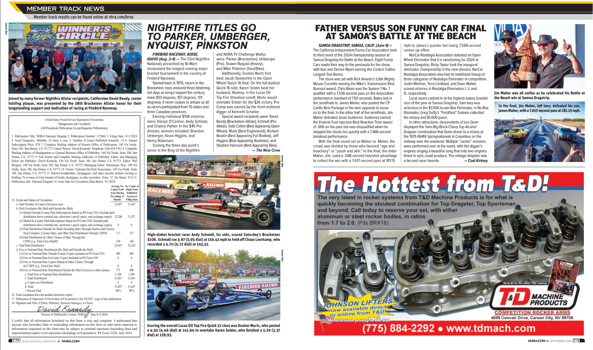
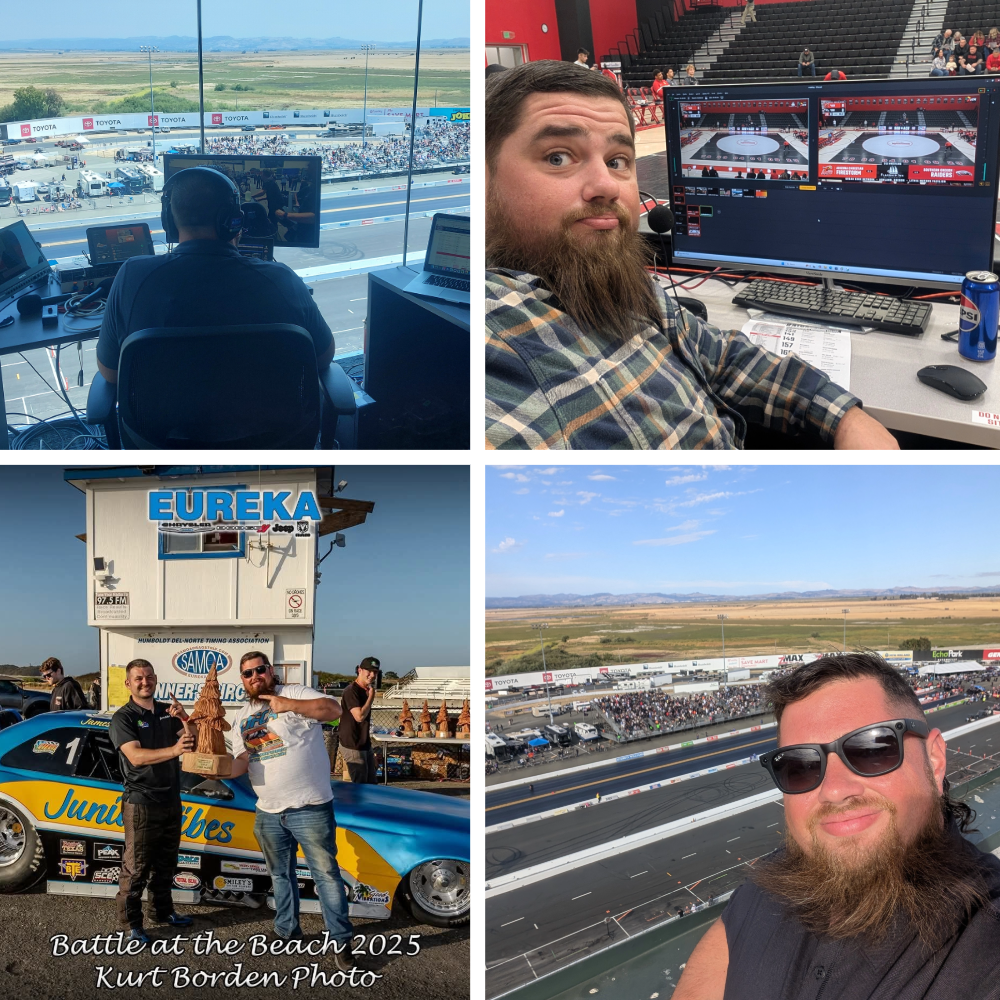
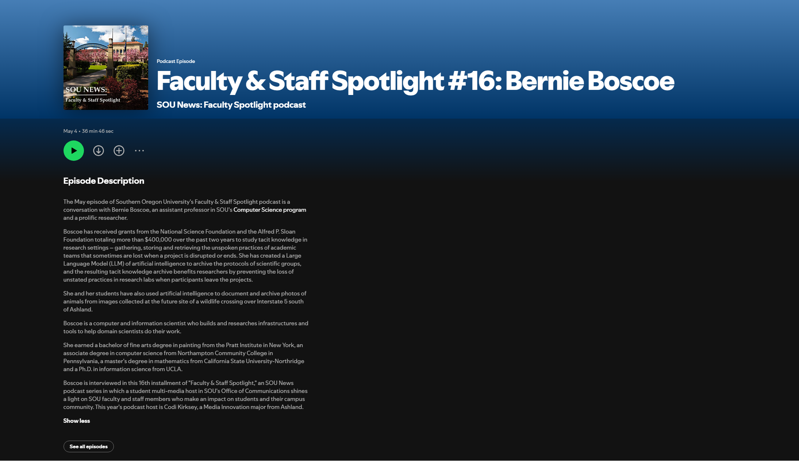
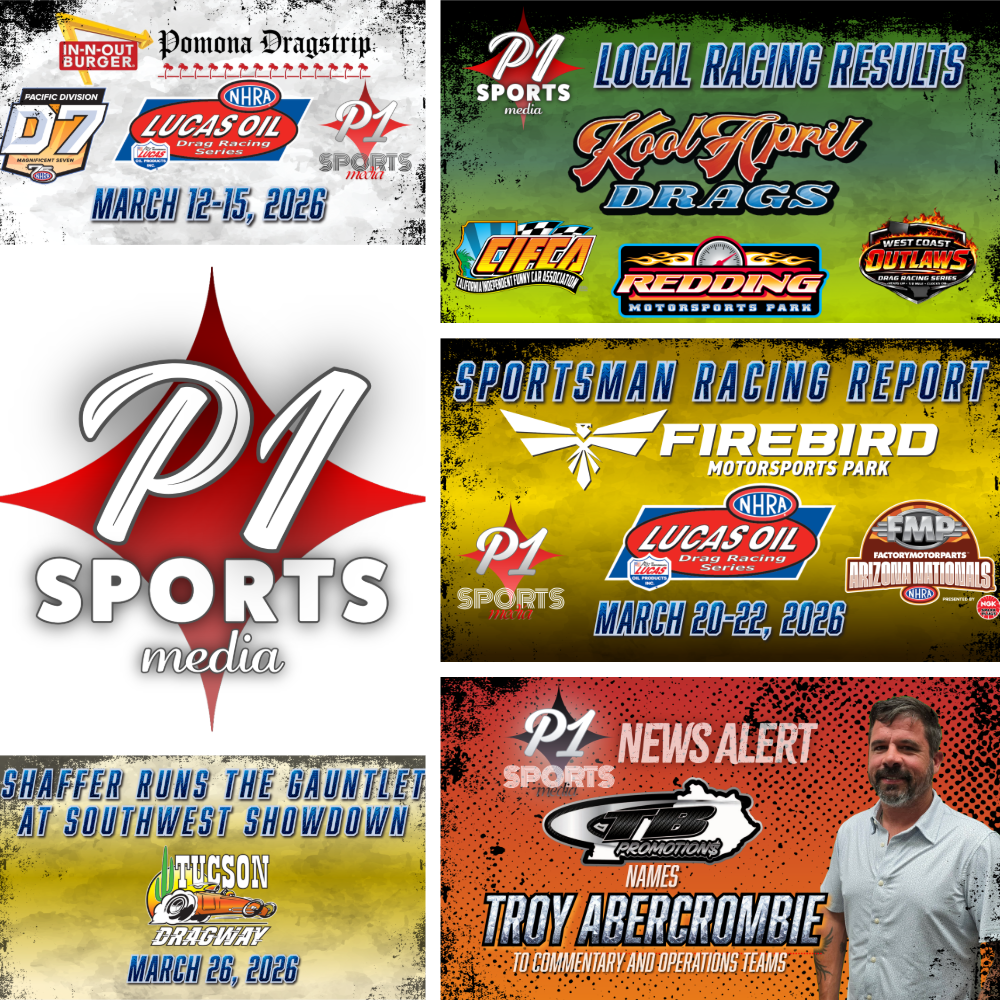
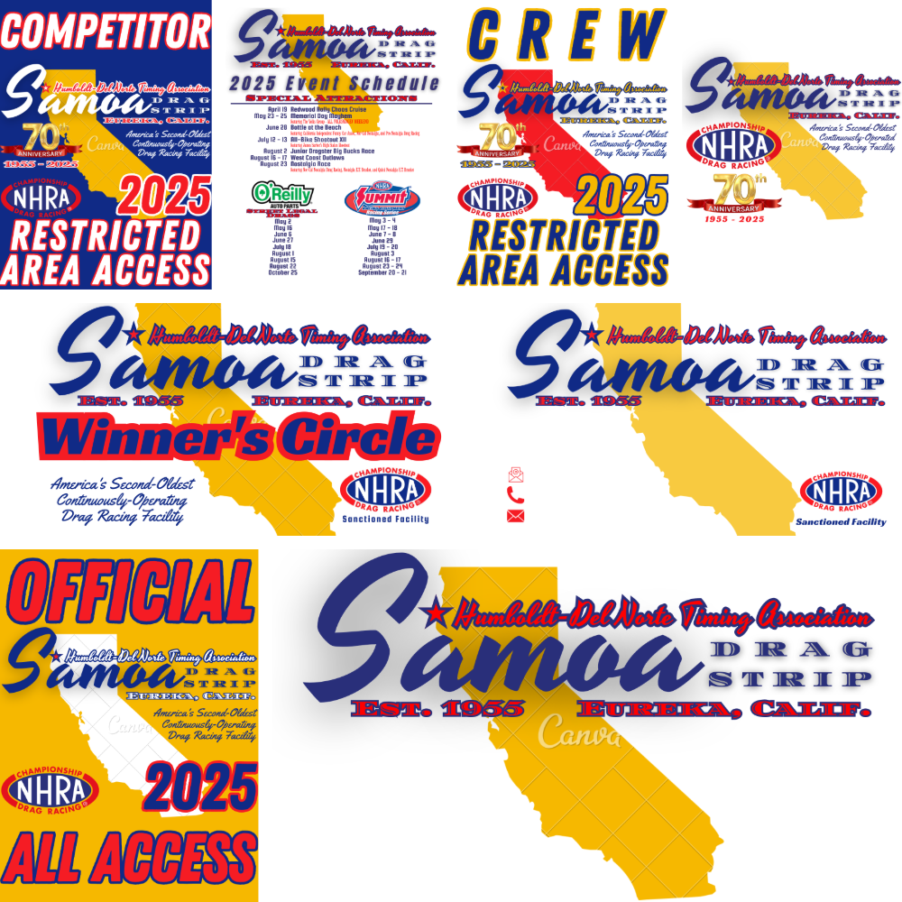

Nationally-Published Motorsports Writer

I have been featured as both a contributor and a competitor in National Dragster, the official publication of the National Hot Rod Association. My work has been published in both print and digital formats, and I have been recognized for my contributions to the motorsports community. As a nationally-published motorsports writer, I have had the opportunity to share my insights and experiences with a wide audience of racing enthusiasts. My work has covered a range of topics, including race results, driver profiles, and industry trends.
Sports Broadcaster

I have provided live commentary for a variety of sports events, including NASCAR and NHRA events, as well as Southern Oregon University Basketball and Wrestling. My experience in sports broadcasting has allowed me to develop strong communication skills and the ability to think on my feet in high-pressure situations. I have a passion for sports and enjoy sharing my knowledge and enthusiasm with audiences through live commentary. My work as a sports broadcaster has been recognized for its professionalism and accuracy, and I have received positive feedback from both fans and industry professionals.
Promotional Podcaster

I hosted and produced Southern Oregon University's Faculty and Staff Spotlight Podcast in 2026. The podcast featured interviews with faculty and staff members from various departments at the university, highlighting their work and contributions to the campus community. As the host and producer of the podcast, I was responsible for conducting interviews, editing audio, and promoting the episodes through social media and other channels. While conversation was the main product, I strived to promote the university's brand, location, programming, culture, faculty, and staff. My episodes were well-received by listeners and helped to increase engagement with the university's community.
Graphic and Branding Designer
P1 Sports Media

In addition to my work as writer and editor at P1 Sports Media, I also design graphics that accompany news articles and other content.
Samoa Drag Strip 2025 Branding Refresh

I designed a comprehensive branding package for Samoa Dragstrip in 2025, to include logo design, palettes, and other visual materials. My concept refreshed a tired brand and created a more modern and appealing identity for the dragstrip while maintaining retro styling. The design package included letterhead, business card stock, the event schedule, 70th Anniversary t-shirt design, as well as credential badging, and other branded materials.